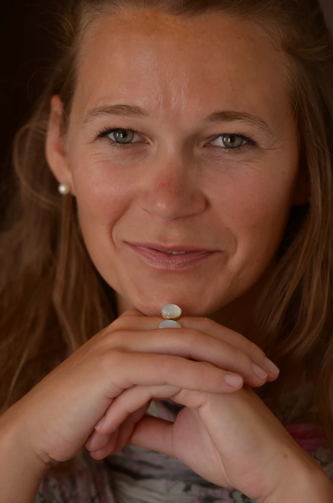
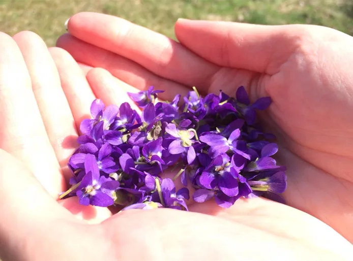

01 / 10
Illingen · Freiburg · Stuttgart
2003 Die Wurzeln
Staatlich anerkannte Physiotherapeutin. Dann Manuelle Therapie mit 260 Stunden, Lymphdrainage, die Heilpraktiker-Ausbildung – und 2006 der Schritt in die Selbstständigkeit.